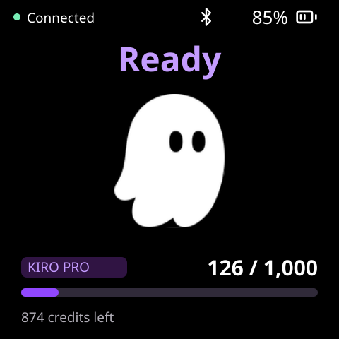
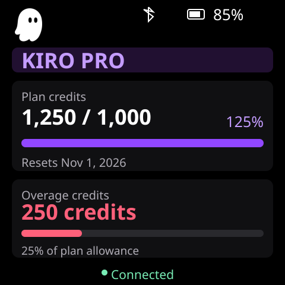

Ghost companionAnimated activity and a compact credit bar. Tap the bar for the detailed usage view.
Usage dashboardPlan allowance, used credits, percentage and reset date. Extra credits appear in a separate red meter, measured against the plan allowance—not an invented overage cap.